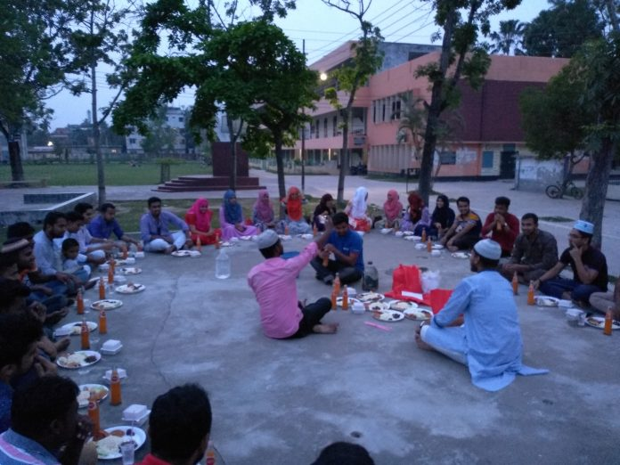
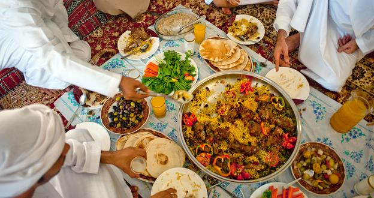

Notice Board

রোজা মুসলমানদের জন্য অবশ্য পালনীয় বিধান। তাই শেষ রাতে সাহ্রির পর দিনশেষে ইফতার পরম আনন্দের মুহূর্ত। তবে শহর বা গ্রামাঞ্চলের ইফতার আয়োজন থেকে কিছুটা ভিন্ন কলেজ ক্যাম্পাসের ইফতার। এখানে ধর্ম-বর্ণ মিলেমিশে বন্ধুতার প্রকাশ ঘটে। ফলে ক্যাম্পাসের ইফতারে অংশ নেয় অন্য ধর্মের বন্ধুরাও। তাই সবকিছু ছাপিয়ে এ আয়োজন হয়ে ওঠে সম্প্রীতির বন্ধন হিসেবে।গোধূলি বেলায় বিকেলের নরম রোদে সবুজ ঘাসের চাদরে বৃত্তাকার হয়ে বসে ১০-১৫ জন বন্ধু আবার কেও কলেজের মধু মঞ্চে বসে।ইফতারি সামনে রেখে সবাই অপেক্ষায় রয়েছেন আজানের। ইফতার সামগ্রী খুব বেশি না হলেও সবার চোখে-মুখে উচ্ছ্বাসের ছটা স্পষ্ট। সবাই মশগুল আড্ডায় তবে কেউ কেউ ব্যস্ত শেষ মুহূর্তের কিছু কাজ করতে । সোমবার শেষ বিকেলে এম এম কলেজের মধু মঞ্চের চিত্র এটি।রীষ্মের প্রচণ্ড খরতাপে ক্লান্ত-তৃষ্ণার্ত শিক্ষার্থীরা নিজেরাই বন্ধুদের নিয়ে দলে দলে বিভক্ত হয়ে ইফতারের আয়োজন করে। পরিবারের সঙ্গে সাহ্রি-ইফতার করতে না পারার কষ্ট তারা এভাবেই ভুলে থাকতে চায়। এই ক্ষুদ্র আয়োজনে চলে খুঁনসুটি আর আড্ডা। ইফতার আয়োজনে থাকে ছোলা, মুড়ি, পিঁয়াজু, বেগুনি, আলুর চপ আর সঙ্গে থাকে শরবত এবং কলাসহ দু’এক রকমের ফল। এর মধ্যেই সবাই খুঁজে পায় নির্মল আনন্দ এবং পরিতৃপ্তি। রমজান মাস জুড়েই ক্যাম্পাসে ইফতারের আয়োজন থাকে চোখে পড়ার মতো। সমাজবিজ্ঞান বিভাগের শিক্ষার্থী মুজাহিদ বলেন, ‘ক্যাম্পাসে বসে ইফতার মানেই আলাদা অভিজ্ঞতা। শেষ রাতে সবাইকে নিয়ে একসঙ্গে বসে হলের ডাইনিংয়ে সাহ্রি খাওয়ার মাঝে থাকে অন্যরকম তৃপ্তি। ক্যাম্পাসে সবুজ ঘাসের ওপর পত্রিকা বিছিয়ে সহপাঠী বা বন্ধুদের নিয়ে ইফতার করলে সব ক্লান্তি যেন এক নিমিষেই দূর হয়ে যায়।বন্ধুদের সঙ্গে ইফতারে অংশ নেয়া সুমিত ঘোষ বলেন, ‘এ এক অসাধারণ অনভূতি! বন্ধুদের সঙ্গে ইফতার পার্টি খুব উপভোগ করি।ধর্ম বর্ন নির্বিষেশে ছেলে মেয়ে একসাথে বসে ইফতারি বন্ধুত্বের বন্ধনকে এক অন্য উচ্চতায় নিয়ে যায়।
